Chapter 13
Kinetic Theory
Kinetic Theory

13.1 Introduction
13.2 Molecular nature of matter
13.3 Behaviour of gases
13.4 Kinetic theory of an ideal gas
13.5 Law of equipartition of energy
13.6 Specific heat capacity
13.7 Mean free path
Summary
Points to ponder
Exercises
Additional exercises
13.1 INTRODUCTION
Boyle discovered the law named after him in 1661. Boyle, Newton and several others tried to explain the behaviour of gases by considering that gases are made up of tiny atomic particles. The actual atomic theory got established more than 150 years later. Kinetic theory explains the behaviour of gases based on the idea that the gas consists of rapidly moving atoms or molecules. This is possible as the inter-atomic forces, which are short range forces that are important for solids and liquids, can be neglected for gases. The kinetic theory was developed in the nineteenth century by Maxwell, Boltzmann and others. It has been remarkably successful. It gives a molecular interpretation of pressure and temperature of a gas, and is consistent with gas laws and Avogadro’s hypothesis. It correctly explains specific heat capacities of many gases. It also relates measurable properties of gases such as viscosity, conduction and diffusion with molecular parameters, yielding estimates of molecular sizes and masses. This chapter gives an introduction to kinetic theory.
13.2 MOLECULAR NATURE OF MATTER
Richard Feynman, one of the great physicists of 20th century considers the discovery that “Matter is made up of atoms” to be a very significant one. Humanity may suffer annihilation (due to nuclear catastrophe) or extinction (due to environmental disasters) if we do not act wisely. If that happens, and all of scientific knowledge were to be destroyed then Feynman would like the ‘Atomic Hypothesis’ to be communicated to the next generation of creatures in the universe. Atomic Hypothesis: All things are made of atoms - little particles that move around in perpetual motion, attracting each other when they are a little distance apart, but repelling upon being squeezed into one another.
Speculation that matter may not be continuous, existed in many places and cultures. Kanada in India and Democritus in Greece had suggested that matter may consist of indivisible constituents. The scientific ‘Atomic Theory’ is usually credited to John Dalton. He proposed the atomic theory to explain the laws of definite and multiple proportions obeyed by elements when they combine into compounds. The first law says that any given compound has, a fixed proportion by mass of its constituents. The second law says that when two elements form more than one compound, for a fixed mass of one element, the masses of the other elements are in ratio of small integers.
Atomic Hypothesis in Ancient India and Greece
Though John Dalton is credited with the introduction of atomic viewpoint in modern science, scholars in ancient India and Greece conjectured long before the existence of atoms and molecules. In the Vaiseshika school of thought in India founded by Kanada (Sixth century B.C.) the atomic picture was developed in considerable detail. Atoms were thought to be eternal, indivisible, infinitesimal and ultimate parts of matter. It was argued that if matter could be subdivided without an end, there would be no difference between a mustard seed and the Meru mountain. The four kinds of atoms (Paramanu — Sanskrit word for the smallest particle) postulated were Bhoomi (Earth), Ap (water), Tejas (fire) and Vayu (air) that have characteristic mass and other attributes, were propounded. Akasa (space) was thought to have no atomic structure and was continuous and inert. Atoms combine to form different molecules (e.g. two atoms combine to form a diatomic molecule dvyanuka, three atoms form a tryanuka or a triatomic molecule), their properties depending upon the nature and ratio of the constituent atoms. The size of the atoms was also estimated, by conjecture or by methods that are not known to us. The estimates vary. In Lalitavistara, a famous biography of the Buddha written mainly in the second century B.C., the estimate is close to the modern estimate of atomic size, of the order of 10–10 m.
In ancient Greece, Democritus (Fourth century B.C.) is best known for his atomic hypothesis. The word ‘atom’ means ‘indivisible’ in Greek. According to him, atoms differ from each other physically, in shape, size and other properties and this resulted in the different properties of the substances formed by their combination. The atoms of water were smooth and round and unable to ‘hook’ on to each other, which is why liquid /water flows easily. The atoms of earth were rough and jagged, so they held together to form hard substances. The atoms of fire were thorny which is why it caused painful burns. These fascinating ideas, despite their ingenuity, could not evolve much further, perhaps because they were intuitive conjectures and speculations not tested and modified by quantitative experiments - the hallmark of modern science.
To explain the laws Dalton suggested, about 200 years ago, that the smallest constituents of an element are atoms. Atoms of one element are identical but differ from those of other elements. A small number of atoms of each element combine to form a molecule of the compound. Gay Lussac’s law, also given in early 19th century, states: When gases combine chemically to yield another gas, their volumes are in the ratios of small integers. Avogadro’s law (or hypothesis) says: Equal volumes of all gases at equal temperature and pressure have the same number of molecules. Avogadro’s law, when combined with Dalton’s theory explains Gay Lussac’s law. Since the elements are often in the form of molecules, Dalton’s atomic theory can also be referred to as the molecular theory of matter. The theory is now well accepted by scientists. However even at the end of the nineteenth century there were famous scientists who did not believe in atomic theory !
From many observations, in recent times we now know that molecules (made up of one or more atoms) constitute matter. Electron microscopes and scanning tunnelling microscopes enable us to even see them. The size of an atom is about an angstrom (10 -10 m). In solids, which are tightly packed, atoms are spaced about a few angstroms (2 Å) apart. In liquids the separation between atoms is also about the same. In liquids the atoms are not as rigidly fixed as in solids, and can move around. This enables a liquid to flow. In gases the interatomic distances are in tens of angstroms. The average distance a molecule can travel without colliding is called the mean free path. The mean free path, in gases, is of the order of thousands of angstroms. The atoms are much freer in gases and can travel long distances without colliding. If they are not enclosed, gases disperse away. In solids and liquids the closeness makes the interatomic force important. The force has a long range attraction and a short range repulsion. The atoms attract when they are at a few angstroms but repel when they come closer. The static appearance of a gas is misleading. The gas is full of activity and the equilibrium is a dynamic one. In dynamic equilibrium, molecules collide and change their speeds during the collision. Only the average properties are constant.
Atomic theory is not the end of our quest, but the beginning. We now know that atoms are not indivisible or elementary. They consist of a nucleus and electrons. The nucleus itself is made up of protons and neutrons. The protons and neutrons are again made up of quarks. Even quarks may not be the end of the story. There may be string like elementary entities. Nature always has surprises for us, but the search for truth is often enjoyable and the discoveries beautiful. In this chapter, we shall limit ourselves to understanding the behaviour of gases (and a little bit of solids), as a collection of moving molecules in incessant motion.
13.3 Behaviour of Gases
Properties of gases are easier to understand than those of solids and liquids. This is mainly because in a gas, molecules are far from each other and their mutual interactions are negligible except when two molecules collide. Gases at low pressures and high temperatures much above that at which they liquefy (or solidify) approximately satisfy a simple relation between their pressure, temperature and volume given by (see Ch. 11)
PV = KT (13.1)
As  = constant = kB (13.2)
= constant = kB (13.2)
John Dalton (1766- 1844)
He was an English chemist. When different types of atoms combine, they obey certain simple laws. Dalton’s atomic theory explains these laws in a simple way. He also gave a theory of colour blindness.
Amedeo Avogadro (1776 – 1856)
He made a brilliant guess that equal volumes of gases have equal number of molecules at the same temperature and pressure. This helped in understanding the combination of different gases in a very simple way. It is now called Avogadro’s hypothesis (or law). He also suggested that the smallest constituent of gases like hydrogen, oxygen and nitrogen are not atoms but diatomic molecules.
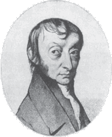
P (atm)
Fig.13.1 Real gases approach ideal gas behaviour at low pressures and high temperatures.
where n is the number density, i.e. number of molecules per unit volume. kB is the Boltzmann constant introduced above. Its value in SI units is 1.38 × 10–23JK–1.
Another useful form of Eq. (13.3) is
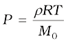(13.5)
where ρ is the mass density of the gas.
A gas that satisfies Eq. (13.3) exactly at all pressures and temperatures is defined to be an ideal gas. An ideal gas is a simple theoretical model of a gas. No real gas is truly ideal. Fig. 13.1 shows departures from ideal gas behaviour for a real gas at three different temperatures. Notice that all curves approach the ideal gas behaviour for low pressures and high temperatures.
At low pressures or high temperatures the molecules are far apart and molecular interactions are negligible. Without interactions
the gas behaves like an ideal one.
If we fix μ and T in Eq. (13.3), we get
PV = constant (13.6)
i.e., keeping temperature constant, pressure of a given mass of gas varies inversely with volume. This is the famous Boyle’s law. Fig. 13.2 shows comparison between experimental P-V curves and the theoretical curves predicted by Boyle’s law. Once again you see that the agreement is good at high temperatures and low pressures. Next, if you fix P, Eq. (13.1) shows that V ∝ Ti.e., for a fixed pressure, the volume of a gas is proportional to its absolute temperature T (Charles’ law). See Fig. 13.3.
Fig.13.2 Experimental P-V curves (solid lines) for steam at three temperatures compared with Boyle’s law (dotted lines). P is in units of 22 atm and V in units of 0.09 litres.
Finally, consider a mixture of non-interacting ideal gases: μ1 moles of gas 1, μ2 moles of gas 2, etc. in a vessel of volume V at temperature T and pressure P. It is then found that the equation
of state of the mixture is :
PV = ( μ1 + μ2 +... ) RT (13.7)
i.e. (13.8)
= P1 + P2 + ... (13.9)
Clearly P1 = μ1RT/V is the pressure gas 1 would exert at the same conditions of volume and temperature if no other gases were present. This is called the partial pressure of the gas. Thus, the total pressure of a mixture of ideal gases is the sum of partial pressures. This is Dalton’s law of partial pressures.
Fig. 13.3 Experimental T-V curves (solid lines) for CO2 at three pressures compared with Charles’ law (dotted lines). T is in units of 300 K and V in units of 0.13 litres.
We next consider some examples which give us information about the volume occupied by the molecules and the volume of a single molecule.
Example 13.1 The density of water is 1000 kg m–3. The density of water vapour at 100 °C and 1 atm pressure is 0.6 kg m–3. The volume of a molecule multiplied by the total number gives ,what is called, molecular volume. Estimate the ratio (or fraction) of the molecular volume to the total volume occupied by the water vapour under the above conditions of temperature and pressure.
Answer For a given mass of water molecules, the density is less if volume is large. So the volume of the vapour is 1000/0.6 = /(6 ×10–4) times larger. If densities of bulk water and water molecules are same, then the fraction of molecular volume to the total volume in liquid state is 1. As volume in vapour state has increased, the fractional volume is less by the same amount, i.e. 6×10–4.
Example 13.2 Estimate the volume of a water molecule using the data in Example 13.1.
Answer In the liquid (or solid) phase, the molecules of water are quite closely packed. The density of water molecule may therefore, be regarded as roughly equal to the density of bulk water = 1000 kg m–3. To estimate the volume of a water molecule, we need to know the mass of a single water molecule. We know that 1 mole of water has a mass approximately equal to (2 + 16)g = 18 g = 0.018 kg. Since 1 mole contains about 6 × 1023 molecules (Avogadro’s number), the mass of a molecule of water is (0.018)/(6 × 1023) kg = 3 × 10–26 kg. Therefore, a rough estimate of the volume of a water molecule is as follows : Volume of a water molecule = (3 × 10–26 kg)/ (1000 kg m–3) = 3 × 10–29 m3 = (4/3) π (Radius)3 Hence, Radius ≈ 2 ×10–10 m = 2 Å
Example 13.3 What is the average distance between atoms (interatomic distance) in water? Use the data given in Examples 13.1 and 13.2.
Answer : A given mass of water in vapour state has 1.67×103 times the volume of the same mass of water in liquid state (Ex. 13.1). This is also the increase in the amount of volume available for each molecule of water. When volume increases by 103 times the radius increases by V1/3 or 10 times, i.e., 10 × 2 Å = 20 Å. So the average distance is 2 × 20 = 40 Å.
Example 13.4 A vessel contains two non-reactive gases : neon (monatomic) and oxygen (diatomic). The ratio of their partial pressures is 3:2. Estimate the ratio of (i) number of molecules and (ii) mass density of neon and oxygen in the vessel. Atomic mass of Ne = 20.2 u, molecular mass of O2 = 32.0 u.
Answer Partial pressure of a gas in a mixture is the pressure it would have for the same volume and temperature if it alone occupied the vessel. (The total pressure of a mixture of non-reactive gases is the sum of partial pressures due to its constituent gases.) Each gas (assumed ideal) obeys the gas law. Since V and T are common to the two gases, we have P1V = µ1 RT and P2V = µ2 RT, i.e. (P1/P2) = (µ1 / µ2). Here 1 and 2 refer to neon and oxygen respectively. Since (P1/P2) = (3/2) (given), (µ1/ µ2) = 3/2. (i) By definition µ1 = (N1/NA ) and µ2 = (N2/NA) where N1 and N2 are the number of molecules of 1 and 2, and NA is the Avogadro’s number. Therefore, (N1/N2) = (µ1 / µ2) = 3/2.
(ii) We can also write µ1 = (m1/M1) and µ2 = (m2/M2) where m1 and m2 are the masses of 1 and 2; and M1 and M2 are their molecular masses. (Both m1 and M1; as well as m2 and M2 should be expressed in the same units). If ρ1 and ρ2 are the mass densities of 1 and 2 respectively, we have
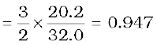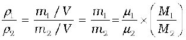
13.4 KINETIC THEORY OF AN IDEAL GAS
Kinetic theory of gases is based on the molecular picture of matter. A given amount of gas is a collection of a large number of molecules (typically of the order of Avogadro’s number) that are in incessant random motion. At ordinary pressure and temperature, the average distance between molecules is a factor of 10 or more than the typical size of a molecule (2 Å). Thus the interaction between the molecules is negligible and we can assume that they move freely in straight lines according to Newton’s first law. However, occasionally, they come close to each other, experience intermolecular forces and their velocities change. These interactions are called collisions. The molecules collide incessantly against each other or with the walls and change their velocities. The collisions are considered to be elastic. We can derive an expression for the pressure of a gas based on the kinetic theory. We begin with the idea that molecules of a gas are in incessant random motion, colliding against one another and with the walls of the container. All collisions between molecules among themselves or between molecules and the walls are elastic. This implies that total kinetic energy is conserved. The total momentum is conserved as usual.
13.4.1 Pressure of an Ideal Gas
Consider a gas enclosed in a cube of side l. Take the axes to be parallel to the sides of the cube, as shown in Fig. 13.4. A molecule with velocity (vx ,vy , vz ) hits the planar wall parallel to yz-plane
P = n m (13.12)
(13.12)
where is the average of vx2 . Now the gas is isotropic, i.e. there is no preferred direction of velocity of the molecules in the vessel. Therefore, by symmetry,
 =
= =
= 
= (1/3) [ + + ] = (1/3) (13.13)
(13.13)
where v is the speed and denotes the mean of the squared speed. Thus
P = (1/3) n m (13.14)
. Thus, on the whole, molecular collisions (if they are not too frequent and the time spent in a collision is negligible compared to time between collisions) will not affect the calculation above.
P = n m (13.12)
where is the average of vx2 . Now the gas is isotropic, i.e. there is no preferred direction of velocity of the molecules in the vessel. Therefore, by symmetry,
is the average of vx2 . Now the gas is isotropic, i.e. there is no preferred direction of velocity of the molecules in the vessel. Therefore, by symmetry,
 =
=  =
= 
= (1/3) [ +
+  +
+  ] = (1/3)
] = (1/3)  (13.13)
(13.13)
where v is the speed and  denotes the mean of the squared speed. Thus
denotes the mean of the squared speed. Thus
P = (1/3) n m 
P = n m (13.12)
where is the average of vx2 . Now the gas is isotropic, i.e. there is no preferred direction of velocity of the molecules in the vessel. Therefore, by symmetry,
= =
= (1/3) [ + + ] = (1/3) (13.13)
where v is the speed and denotes the mean of the squared speed. Thus
P = (1/3) n m
 (13.15a)
(13.15b)
(13.15a)
(13.15b)
P = n m  (13.12)
(13.12)
where is the average of vx2 . Now the gas is isotropic, i.e. there is no preferred direction of velocity of the molecules in the vessel. Therefore, by symmetry,
is the average of vx2 . Now the gas is isotropic, i.e. there is no preferred direction of velocity of the molecules in the vessel. Therefore, by symmetry,
 =
=  =
= 
= (1/3) [ + 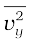 +
+ 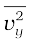 +  ] = (1/3)
] = (1/3)  (13.13)
(13.13)
where v is the speed and  denotes the mean of the squared speed. Thus
denotes the mean of the squared speed. Thus
P = (1/3) n m  (13.14)
(13.14)
Founders of Kinetic Theory of Gases
James Clerk Maxwell (1831 – 1879), born in Edinburgh, Scotland, was among the greatest physicists of the nineteenth century. He derived the thermal velocity distribution of molecules in a gas and was among the first to obtain reliable estimates of molecular parameters from measurable quantities like viscosity, etc. Maxwell’s greatest achievement was the unification of the laws of electricity and magnetism (discovered by Coulomb, Oersted, Ampere and Faraday) into a consistent set of equations now called Maxwell’s equations. From these he arrived at the most important conclusion that light is an electromagnetic wave. Interestingly, Maxwell did not agree with the idea (strongly suggested by the Faraday’s laws of electrolysis) that electricity was particulate in nature.
Ludwig Boltzmann (1844 – 1906) born in Vienna, Austria, worked on the kinetic theory of gases independently of Maxwell. A firm advocate of atomism, that is basic to kinetic theory, Boltzmann provided a statistical interpretation of the Second Law of thermodynamics and the concept of entropy. He is regarded as one of the founders of classical statistical mechanics. The proportionality constant connecting energy and temperature in kinetic theory is known as Boltzmann’s constant in his honour.
PV = (1/3) nV m  (13.15a)
(13.15a)
PV = (2/3) N x ½ m  (13.15b)
(13.15b)
E = N × (1/2) m  (13.16)
(13.16)
or E/ N = ½ m  = (3/2) kBT (13.19)
= (3/2) kBT (13.19)
P = (1/3) [n1m1 + n2 m2
+ n2 m2  +… ] (13.20)
+… ] (13.20)
½ m1  = ½ m2 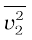= (3/2) kB T
= ½ m2 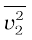= (3/2) kB T
The quantity in the bracket is the average translational kinetic energy of the molecules in the gas. Since the internal energy E of an ideal gas is purely kinetic*,
E = N × (1/2) m (13.16)
Equation (13.15) then gives :
PV = (2/3) E (13.17)
We are now ready for a kinetic interpretation of temperature. Combining Eq. (13.17) with the ideal gas Eq. (13.3), we get
E = (3/2) kBNT (13.18)
or E/ N = 1⁄2 m= (3/2) kBT (13.19)
i.e., the average kinetic energy of a molecule is proportional to the absolute temperature of the gas; it is independent of pressure, volume or the nature of the ideal gas. This is a fundamental result relating temperature, a macroscopic measurable parameter of a gas
(a thermodynamic variable as it is called) to a molecular quantity, namely the average kinetic energy of a molecule. The two domains are connected by the Boltzmann constant. We note in passing that Eq. (13.18) tells us that internal energy of an ideal gas depends only on temperature, not on pressure or volume. With this interpretation of temperature, kinetic theory of an ideal gas is completely consistent with the ideal gas equation and the various gas laws based on it.
For a mixture of non-reactive ideal gases, the total pressure gets contribution from each gas in the mixture. Equation (13.14) becomes
P = (1/3) [n1m1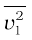+ n2m2 +... ] (13.20)
+... ] (13.20)
In equilibrium, the average kinetic energy of the molecules of different gases will be equal. That is,
1⁄2 m1= 1⁄2 m2 = (3/2) kBT
so that
P = (n1 + n2 +... ) kBT (13.21)
which is Dalton’s law of partial pressures.
From Eq. (13.19), we can get an idea of the typical speed of molecules in a gas. At a temperature T = 300 K, the mean square speed of a molecule in nitrogen gas is :
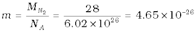 kg.
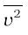 = 3 kB T / m = (516)2 m2s-2
The square root of  is known as root mean square (rms) speed and is denoted by vrms,
is known as root mean square (rms) speed and is denoted by vrms,
( We can also write  as <v2>.)
as <v2>.)
vrms = 516 m s-1
The speed is of the order of the speed of sound in air. It follows from Eq. (13.19) that at the same temperature, lighter molecules have greater rms speed.
Example 13.5 A flask contains argon and chlorine in the ratio of 2:1 by mass. The temperature of the mixture is 27 °C. Obtain the ratio of (i) average kinetic energy per molecule, and (ii) root mean square speed vrms of the molecules of the two gases. Atomic mass of argon = 39.9 u; Molecular mass of chlorine = 70.9 u.
Answer The important point to remember is that the average kinetic energy (per molecule) of any (ideal) gas (be it monatomic like argon, diatomic like chlorine or polyatomic) is always equal to (3/2) kBT. It depends only on temperature, and is independent of the nature of the gas.
(i) Since argon and chlorine both have the same temperature in the flask, the ratio of average kinetic energy (per molecule) of the two gases is 1:1.
(ii) Now ½ m vrms2 = average kinetic energy per molecule = (3/2) ) kBT where m is the mass of a molecule of the gas. Therefore,
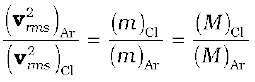= 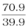 =1.77
where M denotes the molecular mass of the gas. (For argon, a molecule is just an atom of argon.)
Taking square root of both sides,
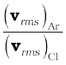 = 1.33
You should note that the composition of the mixture by mass is quite irrelevant to the above calculation. Any other proportion by mass of argon and chlorine would give the same answers to (i) and (ii), provided the temperature remains unaltered.
*E denotes the translational part of the internal energy U that may include energies due to other degrees of freedom also. See section 13.5.
Maxwell Distribution Function
In a given mass of gas, the velocities of all molecules are not the same, even when bulk parameters like pressure, volume and temperature are fixed. Collisions change the direction and the speed of molecules. However in a state of equilibrium, the distribution of speeds is constant or fixed.
Distributions are very important and useful when dealing with systems containing large number of objects. As an example consider the ages of different persons in a city. It is not feasible to deal with the age of each individual. We can divide the people into groups: children up to age 20 years, adults between ages of 20 and 60, old people above 60. If we want more detailed information we can choose smaller intervals, 0-1, 1-2,..., 99-100 of age groups. When the size of the interval becomes smaller, say half year, the number of persons in the interval will also reduce, roughly half the original number in the one year interval. The number of persons dN(x) in the age interval x and x+dx is proportional to dx or dN(x) = nx dx. We have used nx to denote the number of persons at the value of x.
Maxwell distribution of molecular speeds
In a similar way the molecular speed distribution gives the number of molecules between the speeds v and v+ dv. dN(v) = 4p N a3e–bv2 v2 dv = nvdv. This is called Maxwell distribution. The plot of nv against v is shown in the figure. The fraction of the molecules with speeds v and v+dv is equal to the area of the strip shown. The average of any quantity like v2 is defined by the integral <v2> = (1/N ) ∫ v2 dN(v) = (3kB T/m) which agrees with the result derived from more elementary considerations.
Example 13.6 Uranium has two isotopes of masses 235 and 238 units. If both are present in Uranium hexafluoride gas which would have the larger average speed ? If atomic mass of fluorine is 19 units, estimate the percentage difference in speeds at any temperature.
Answer At a fixed temperature the average energy = ½ m <v2> is constant. So smaller the mass of the molecule, faster will be the speed. The ratio of speeds is inversely proportional to the square root of the ratio of the masses. The masses are 349 and 352 units. So
v349 / v352 = ( 352/ 349)1/2 = 1.0044 .
Hence difference 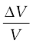= 0.44 %.
[235U is the isotope needed for nuclear fission. To separate it from the more abundant isotope 238U, the mixture is surrounded by a porous cylinder. The porous cylinder must be thick and narrow, so that the molecule wanders through individually, colliding with the walls of the long pore. The faster molecule will leak out more than the slower one and so there is more of the lighter molecule (enrichment) outside the porous cylinder (Fig. 13.5). The method is not very efficient and has to be repeated several times for sufficient enrichment.].
When gases diffuse, their rate of diffusion is inversely proportional to square root of the masses (see Exercise 13.12 ). Can you guess the explanation from the above answer?
Fig. 13.5 Molecules going through a porous wall.
Example 13.7 (a) When a molecule (or an elastic ball) hits a ( massive) wall, it rebounds with the same speed. When a ball hits a massive bat held firmly, the same thing happens. However, when the bat is moving towards the ball, the ball rebounds with a different speed. Does the ball move faster or slower? (Ch.6 will refresh your memory on elastic collisions.)
(b) When gas in a cylinder is compressed by pushing in a piston, its temperature rises. Guess at an explanation of this in terms of kinetic theory using (a) above.
(c) What happens when a compressed gas pushes a piston out and expands. What would you observe ?
(d) Sachin Tendulkar uses a heavy cricket bat while playing. Does it help him in anyway ?
Answer (a) Let the speed of the ball be u relative to the wicket behind the bat. If the bat is moving towards the ball with a speed V relative to the wicket, then the relative speed of the ball to bat is V + u towards the bat. When the ball rebounds (after hitting the massive bat) its speed, relative to bat, is V + u moving away from the bat. So relative to the wicket the speed of the rebounding ball is V + (V + u) = 2V + u, moving away from the wicket. So the ball speeds up after the collision with the bat. The rebound speed will be less than u if the bat is not massive. For a molecule this would imply an increase in temperature.
You should be able to answer (b) (c) and (d) based on the answer to (a).
(Hint: Note the correspondence, piston bat, cylinder wicket, molecule ball.)
13.5 LAW OF EQUIPARTITION OF ENERGY
The kinetic energy of a single molecule is
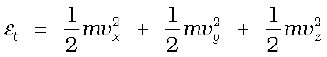 (13.22)
For a gas in thermal equilibrium at temperature T the average value of energy denoted by <> is
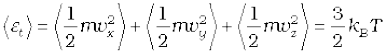 (13.23)
Since there is no preferred direction, Eq. (13.23) implies
 ,
, ,
,
 (13.24)
(13.24)
A molecule free to move in space needs three coordinates to specify its location. If it is constrained to move in a plane it needs two;and if constrained to move along a line, it needs just one coordinate to locate it. This can also be expressed in another way. We say that it has one degree of freedom for motion in a line, two for motion in a plane and three for motion in space. Motion of a body as a whole from one point to another is called translation. Thus, a molecule free to move in space has three translational degrees of freedom. Each translational degree of freedom contributes a term that contains square of some variable of motion, e.g., ½ mvx2 and similar terms in vy and vz. In, Eq. (13.24) we see that in thermal equilibrium, the average of each such term is ½ kBT .
Molecules of a monatomic gas like argon have only translational degrees of freedom. But what about a diatomic gas such as O2 or N2? A molecule of O2 has three translational degrees of freedom. But in addition it can also rotate about its centre of mass. Figure 13.6 shows the two independent axes of rotation 1 and 2, normal to the axis joining the two oxygen atoms about which the molecule can rotate*. The molecule thus has two rotational degrees of freedom, each of which contributes a term to the total energy consisting of translational energy 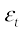 and rotational energy 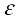r.
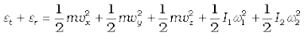 (13.25)
Fig. 13.6 The two independent axes of rotation of a diatomic molecule
where ω1 and ω2 are the angular speeds about the axes 1 and 2 and I1, I2 are the corresponding moments of inertia. Note that each rotational degree of freedom contributes a term to the energy that contains square of a rotational variable of motion.
We have assumed above that the O2 molecule is a ‘rigid rotator’, i.e. the molecule does not vibrate. This assumption, though found to be true (at moderate temperatures) for O2, is not always valid. Molecules like CO even at moderate temperatures have a mode of vibration, i.e. its atoms oscillate along the interatomic axis like a one-dimensional oscillator, and contribute a vibrational energy term εv to the total energy:
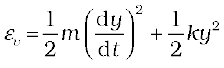
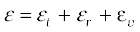 (13.26)
where k is the force constant of the oscillator and y the vibrational co-ordinate.
Once again the vibrational energy terms in Eq. (13.26) contain squared terms of vibrational variables of motion y and dy/dt .
At this point, notice an important feature in Eq.(13.26). While each translational and rotational degree of freedom has contributed only one ‘squared term’ in Eq.(13.26), one vibrational mode contributes two ‘squared terms’ : kinetic and potential energies.
Each quadratic term occurring in the expression for energy is a mode of absorption of energy by the molecule. We have seen that in thermal equilibrium at absolute temperature T, for each translational mode of motion, the average energy is ½ kBT. A most elegant principle of classical statistical mechanics (first proved by Maxwell) states that this is so for each mode of energy: translational, rotational and vibrational. That is, in equilibrium, the total energy is equally distributed in all possible energy modes, with each mode having an average energy equal to ½ kBT. This is known as the law of equipartition of energy. Accordingly, each translational and rotational degree of freedom of a molecule contributes ½ kBT to the energy while each vibrational frequency contributes 2 × ½ kBT = kBT , since a vibrational mode has both kinetic and potential energy modes.
The proof of the law of equipartition of energy is beyond the scope of this book. Here we shall apply the law to predict the specific heats of gases theoretically. Later we shall also discuss briefly, the application to specific heat of solids.
13.6 Specific Heat Capacity
13.6.1 Monatomic Gases
The molecule of a monatomic gas has only three translational degrees of freedom. Thus, the average energy of a molecule at temperature T is (3/2)kBT . The total internal energy of a mole of such a gas is
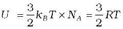 (13.27)
The molar specific heat at constant volume, Cv, is
Cv (monatomic gas) = 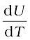 =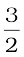RT (13.28)
* Rotation along the line joining the atoms has very small moment of inertia and does not come into play for quantum mechanical reasons. See end of section 13.6.
For an ideal gas,
Cp – Cv = R (13.29)
where Cp is the molar specific heat at constant pressure. Thus,
Cp =  R (13.30)
R (13.30)
The ratio of specific heats  (13.31)
(13.31)
13.6.2 Diatomic Gases
As explained earlier, a diatomic molecule treated as a rigid rotator like a dumbbell has 5 degrees of freedom : 3 translational and 2 rotational. Using the law of equipartition of energy, the total internal energy of a mole of such a gas is
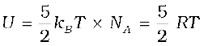 (13.32)
The molar specific heats are then given by
Cv (rigid diatomic) = R, Cp =  R (13.33)
R (13.33)
γ (rigid diatomic) = 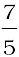 (13.34)
If the diatomic molecule is not rigid but has in addition a vibrational mode

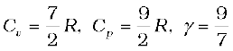R (13.35)
13.6.3 Polyatomic Gases
In general a polyatomic molecule has 3 translational, 3 rotational degrees of freedom and a certain number (f) of vibrational modes. According to the law of equipartition of energy, it is easily seen that one mole of such a gas has
U = ( kBT + kBT + f kBT ) NA
kBT + kBT + f kBT ) NA
i.e. Cv = (3 + f ) R, Cp = (4 + f ) R, 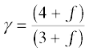 (13.36)
Note that Cp – Cv = R is true for any ideal gas, whether mono, di or polyatomic.
Table 13.1 summarises the theoretical predictions for specific heats of gases ignoring any vibrational modes of motion. The values are in good agreement with experimental values of specific heats of several gases given in Table 13.2. Of course, there are discrepancies between predicted and actual values of specific heats of several other gases (not shown in the table), such as Cl2, C2H6 and many other polyatomic gases. Usually, the experimental values for specific heats of these gases are greater than the predicted values given in Table13.1 suggesting that the agreement can be improved by including vibrational modes of motion in the calculation. The law of equipartition of energy is thus well verified experimentally at ordinary temperatures.
Example 13.8 A cylinder of fixed capacity 44.8 litres contains helium gas at standard temperature and pressure. What is the amount of heat needed to raise the temperature of the gas in the cylinder by 15.0 °C ? (R = 8.31 J mo1–1 K–1).
Answer Using the gas law PV = µRT, you can easily show that 1 mol of any (ideal) gas at standard temperature (273 K) and pressure
Table 13.1 Predicted values of specific heat capacities of gases (ignoring vibrational modes),

Table13.2 Measured values of specific heat capacities of some gases
(1 atm = 1.01 × 105 Pa) occupies a volume of 22.4 litres. This universal volume is called molar volume. Thus the cylinder in this example contains 2 mol of helium. Further, since helium is monatomic, its predicted (and observed) molar specific heat at constant volume, Cv = (3/2) R, and molar specific heat at constant pressure, Cp = (3/2) R + R = (5/2) R. Since the volume of the cylinder is fixed, the heat required is determined by Cv. Therefore,
Heat required = no. of moles × molar specific heat × rise in temperature
= 2 × 1.5 R × 15.0 = 45 R
= 45 × 8.31 = 374 J.
13.6.4 Specific Heat Capacity of Solids
We can use the law of equipartition of energy to determine specific heats of solids. Consider a solid of N atoms, each vibrating about its mean position. An oscillation in one dimension has average energy of 2 × ½ kBT = kBT . In three dimensions, the average energy is 3 kBT. For a mole of solid, N = NA, and the total energy is
U = 3 kBT × NA = 3 RT
Now at constant pressure ∆Q = ∆U + P∆V
= ∆U, since for a solid ∆V is negligible. Hence,
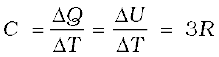 (13.37)
Table 13.3 Specific Heat Capacity of some solids at room temperature and atmospheric pressure
As Table 13.3 shows the prediction generally agrees with experimental values at ordinary temperature (Carbon is an exception).
13.6.5 Specific Heat Capacity of Water
We treat water like a solid. For each atom average energy is 3kBT. Water molecule has three atoms, two hydrogen and one oxygen. So it has
U = 3 × 3 kBT × NA = 9 RT
and C = ∆Q/ ∆T =∆ U / ∆T = 9R .
This is the value observed and the agreement is very good. In the calorie, gram, degree units, water is defined to have unit specific heat. As 1 calorie = 4.179 joules and one mole of water is 18 grams, the heat capacity per mole is
~ 75 J mol-1 K-1 ~ 9R. However with more complex molecules like alcohol or acetone the arguments, based on degrees of freedom, become more complicated.
Lastly, we should note an important aspect of the predictions of specific heats, based on the classical law of equipartition of energy. The predicted specific heats are independent of temperature. As we go to low temperatures, however, there is a marked departure from this prediction. Specific heats of all substances approach zero as T 0. This is related to the fact that degrees of freedom get frozen and ineffective at low temperatures. According to classical physics degrees of freedom must remain unchanged at all times. The behaviour of specific heats at low temperatures shows the inadequacy of classical physics and can be explained only by invoking quantum considerations, as was first shown by Einstein. Quantum mechanics requires a minimum, nonzero amount of energy before a degree of freedom comes into play. This is also the reason why vibrational degrees of freedom come into play only in some cases.
13.7 MEAN FREE PATH
Molecules in a gas have rather large speeds of the order of the speed of sound. Yet a gas leaking from a cylinder in a kitchen takes considerable time to diffuse to the other corners of the room. The top of a cloud of smoke holds together for hours. This happens because molecules in a gas have a finite though small size, so they are bound to undergo collisions. As a result, they cannot move straight unhindered; their paths keep getting incessantly deflected.
Seeing is Believing
Can one see atoms rushing about. Almost but not quite. One can see pollen grains of a flower being pushed around by molecules of water. The size of the grain is ~ 10-5 m. In 1827, a Scottish botanist Robert Brown, while examining, under a microscope, pollen grains of a flower suspended in water noticed that they continuously moved about in a zigzag, random fashion.
Kinetic theory provides a simple explanation of the phenomenon. Any object suspended in water is continuously bombarded from all sides by the water molecules. Since the motion of molecules is random, the number of molecules hitting the object in any direction is about the same as the number hitting in the opposite direction. The small difference between these molecular hits is negligible compared to the total number of hits for an object of ordinary size, and we do not notice any movement of the object.
When the object is sufficiently small but still visible under a microscope, the difference in molecular hits from different directions is not altogether negligible, i.e. the impulses and the torques given to the suspended object through continuous bombardment by the molecules of the medium (water or some other fluid) do not exactly sum to zero. There is a net impulse and torque in this or that direction. The suspended object thus, moves about in a zigzag manner and tumbles about randomly. This motion called now ‘Brownian motion’ is a visible proof of molecular activity. In the last 50 years or so molecules have been seen by scanning tunneling and other special microscopes.
In 1987 Ahmed Zewail, an Egyptian scientist working in USA was able to observe not only the molecules but also their detailed interactions. He did this by illuminating them with flashes of laser light for very short durations, of the order of tens of femtoseconds and photographing them. ( 1 femto- second = 10-15 s ). One could study even the formation and breaking of chemical bonds. That is really seeing !
Fig. 13.7 The volume swept by a molecule in time ∆t in which any molecule will collide with it.
Suppose the molecules of a gas are spheres of diameter d. Focus on a single molecule with the average speed <v>. It will suffer collision with any molecule that comes within a distance d between the centres. In time ∆t, it sweeps a volume πd2 <v> ∆t wherein any other molecule will collide with it (see Fig. 13.7). If n is the number of molecules per unit volume, the molecule suffers nπd2 <v> ∆t collisions in time ∆t. Thus the rate of collisions is nπd2 <v> or the time between two successive collisions is on the average,
τ = 1/(nπ <v> d2 ) (13.38)
The average distance between two successive collisions, called the mean free path l, is :
l = <v> τ = 1/(nπd2) (13.39)
In this derivation, we imagined the other molecules to be at rest. But actually all molecules are moving and the collision rate is determined by the average relative velocity of the molecules. Thus we need to replace <v> by <vr> in Eq. (13.38). A more exact treatment gives
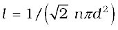 (13.40)
Let us estimate l and τ for air molecules with average speeds <v> = ( 485m/s). At STP
n = 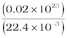
= 2.7 × 10 25 m –3.
Taking, d = 2 × 10–10 m,
τ = 6.1 × 10–10 s
and l = 2.9 × 10–7 m ≈ 1500d (13.41)
As expected, the mean free path given by Eq. (13.40) depends inversely on the number density and the size of the molecules. In a highly evacuated tube n is rather small and the mean free path can be as large as the length of the tube.
Example 13.9 Estimate the mean free path for a water molecule in water vapour at 373 K. Use information from Exercises 13.1 and Eq. (13.41) above.
Answer The d for water vapour is same as that of air. The number density is inversely proportional to absolute temperature.
So
Hence, mean free path 
Note that the mean free path is 100 times the interatomic distance ~ 40 Å = 4 ×10-9 m calculated earlier. It is this large value of mean free path that leads to the typical gaseous behaviour. Gases can not be confined without a container.
Using, the kinetic theory of gases, the bulk measurable properties like viscosity, heat conductivity and diffusion can be related to the microscopic parameters like molecular size. It is through such relations that the molecular sizes were first estimated.
SUMMARY
1. The ideal gas equation connecting pressure (P), volume (V) and absolute temperature (T ) is
PV = µ RT = kB NT
where µ is the number of moles and N is the number of molecules. R and kB are universal constants.
R = 8.314 J mol–1 K–1, kB = = 1.38 × 10–23 J K–1
Real gases satisfy the ideal gas equation only approximately, more so at low pressures and high temperatures.
2. Kinetic theory of an ideal gas gives the relation
where n is number density of molecules, m the mass of the molecule and  is the mean of squared speed. Combined with the ideal gas equation it yields a kinetic interpretation of temperature.
is the mean of squared speed. Combined with the ideal gas equation it yields a kinetic interpretation of temperature.
, 
This tells us that the temperature of a gas is a measure of the average kinetic energy of a molecule, independent of the nature of the gas or molecule. In a mixture of gases at a fixed temperature the heavier molecule has the lower average speed.
3. The translational kinetic energy
E = kB NT.
This leads to a relation
PV = E
4. The law of equipartition of energy states that if a system is in equilibrium at absolute temperature T, the total energy is distributed equally in different energy modes of absorption, the energy in each mode being equal to ½ kB T. Each translational and rotational degree of freedom corresponds to one energy mode of absorption and has energy ½ kB T. Each vibrational frequency has two modes of energy (kinetic and potential) with corresponding energy equal to
2 × ½ kB T = kB T.
5. Using the law of equipartition of energy, the molar specific heats of gases can be determined and the values are in agreement with the experimental values of specific heats of several gases. The agreement can be improved by including vibrational modes of motion.
6. The mean free path l is the average distance covered by a molecule between two successive collisions :
where n is the number density and d the diameter of the molecule.
POINTS TO PONDER
1. Pressure of a fluid is not only exerted on the wall. Pressure exists everywhere in a fluid. Any layer of gas inside the volume of a container is in equilibrium because the pressure is the same on both sides of the layer.
2. We should not have an exaggerated idea of the intermolecular distance in a gas. At ordinary pressures and temperatures, this is only 10 times or so the interatomic distance in solids and liquids. What is different is the mean free path which in a gas is 100 times the interatomic distance and 1000 times the size of the molecule.
3. The law of equipartition of energy is stated thus: the energy for each degree of freedom in thermal equilibrium is ½ kB T. Each quadratic term in the total energy expression of a molecule is to be counted as a degree of freedom. Thus, each vibrational mode gives 2 (not 1) degrees of freedom (kinetic and potential energy modes), corresponding to the energy 2 × ½ kB T = kB T.
4. Molecules of air in a room do not all fall and settle on the ground (due to gravity) because of their high speeds and incessant collisions. In equilibrium, there is a very slight increase in density at lower heights (like in the atmosphere). The effect is small since the potential energy (mgh) for ordinary heights is much less than the average kinetic energy ½ mv2 of the molecules.
5. < v2 > is not always equal to ( < v >)2. The average of a squared quantity is not necessarily the square of the average. Can you find examples for this statement.
EXERCISES
13.1 Estimate the fraction of molecular volume to the actual volume occupied by oxygen gas at STP. Take the diameter of an oxygen molecule to be 3 Å.
13.2 Molar volume is the volume occupied by 1 mol of any (ideal) gas at standard temperature and pressure (STP : 1 atmospheric pressure, 0 °C). Show that it is 22.4 litres.
13.3 Figure 13.8 shows plot of PV/T versus P for 1.00×10–3 kg of oxygen gas at two different temperatures.
Fig. 13.8
(a) What does the dotted plot signify?
(b) Which is true: T1 > T2 or T1 < T2?
(c) What is the value of PV/T where the curves meet on the y-axis?
(d) If we obtained similar plots for 1.00×10–3 kg of hydrogen, would we get the same value of PV/T at the point where the curves meet on the y-axis? If not, what mass of hydrogen yields the same value of PV/T (for low pressurehigh temperature region of the plot) ? (Molecular mass of H2 = 2.02 u, of O2 = 32.0 u, R = 8.31 J mo1–1 K–1.)
13.4 An oxygen cylinder of volume 30 litres has an initial gauge pressure of 15 atm and a temperature of 27 °C. After some oxygen is withdrawn from the cylinder, the gauge pressure drops to 11 atm and its temperature drops to 17 °C. Estimate the mass of oxygen taken out of the cylinder (R = 8.31 J mol–1 K–1, molecular mass of O2 = 32 u).
13.5 An air bubble of volume 1.0 cm3 rises from the bottom of a lake 40 m deep at a temperature of 12 °C. To what volume does it grow when it reaches the surface, which is at a temperature of 35 °C ?
13.6 Estimate the total number of air molecules (inclusive of oxygen, nitrogen, water vapour and other constituents) in a room of capacity 25.0 m3 at a temperature of 27 °C and 1 atm pressure.
13.7 Estimate the average thermal energy of a helium atom at (i) room temperature
(27 °C), (ii) the temperature on the surface of the Sun (6000 K), (iii) the temperature of 10 million kelvin (the typical core temperature in the case of a star).
13.8 Three vessels of equal capacity have gases at the same temperature and pressure. The first vessel contains neon (monatomic), the second contains chlorine (diatomic), and the third contains uranium hexafluoride (polyatomic). Do the vessels contain equal number of respective molecules ? Is the root mean square speed of molecules the same in the three cases? If not, in which case is vrms the largest ?
13.9 At what temperature is the root mean square speed of an atom in an argon gas cylinder equal to the rms speed of a helium gas atom at – 20 °C ? (atomic mass of Ar = 39.9 u, of He = 4.0 u).
13.10 Estimate the mean free path and collision frequency of a nitrogen molecule in a cylinder containing nitrogen at 2.0 atm and temperature 17 0C. Take the radius of a nitrogen molecule to be roughly 1.0 Å. Compare the collision time with the time the molecule moves freely between two successive collisions (Molecular mass of N2 = 28.0 u).
Additional Exercises
13.11 A metre long narrow bore held horizontally (and closed at one end) contains a 76 cm long mercury thread, which traps a 15 cm column of air. What happens if the tube is held vertically with the open end at the bottom ?
13.12 From a certain apparatus, the diffusion rate of hydrogen has an average value of 28.7 cm3 s–1. The diffusion of another gas under the same conditions is measured to have an average rate of 7.2 cm3 s–1. Identify the gas.
[Hint : Use Graham’s law of diffusion: R1/R2 = ( M2 /M1 )1/2, where R1, R2 are diffusion rates of gases 1 and 2, and M1 and M2 their respective molecular masses. The law is a simple consequence of kinetic theory.]
13.13 A gas in equilibrium has uniform density and pressure throughout its volume. This is strictly true only if there are no external influences. A gas column under gravity, for example, does not have uniform density (and pressure). As you might expect, its density decreases with height. The precise dependence is given by the so-called law of atmospheres
n2 = n1 exp [ -mg (h2 – h1)/ kBT]
where n2, n1 refer to number density at heights h2 and h1 respectively. Use this relation to derive the equation for sedimentation equilibrium of a suspension in a liquid column:
n2 = n1 exp [ -mg NA (ρ - P′) (h2 –h1)/ (ρ RT)]
where ρ is the density of the suspended particle, and ρ’ that of surrounding medium. [NA is Avogadro’s number, and R the universal gas constant.] [Hint : Use Archimedes principle to find the apparent weight of the suspended particle.]
13.14 Given below are densities of some solids and liquids. Give rough estimates of the size of their atoms :
[Hint : Assume the atoms to be ‘tightly packed’ in a solid or liquid phase, and use the known value of Avogadro’s number. You should, however, not take the actual numbers you obtain for various atomic sizes too literally. Because of the crudeness of the tight packing approximation, the results only indicate that atomic sizes are in the range of a few Å].